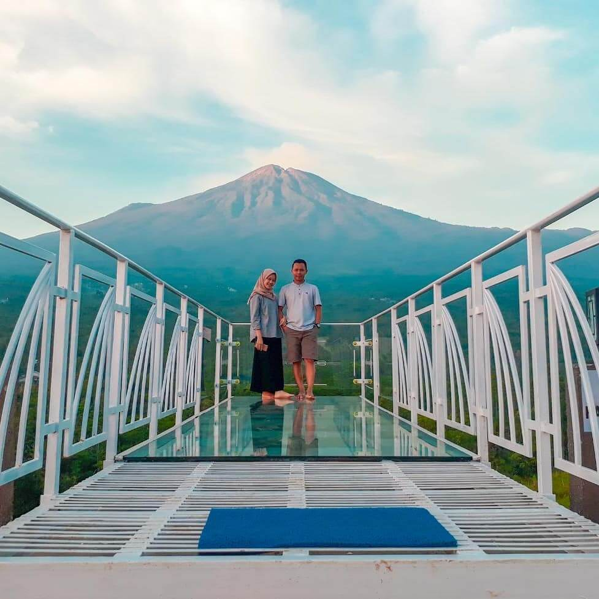
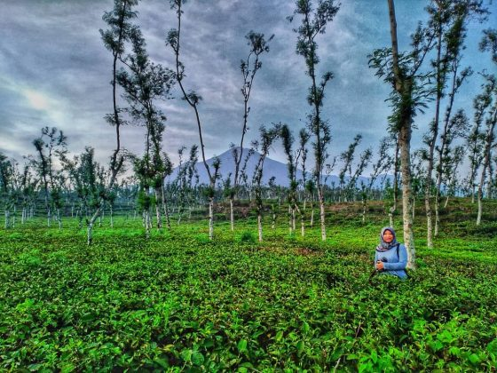
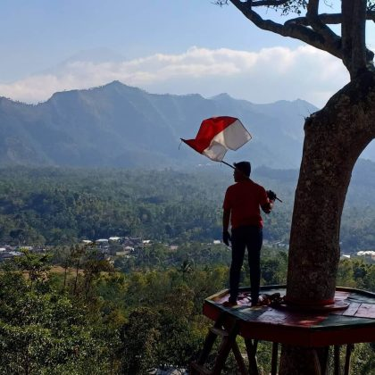

Wisata di Pemalang
Rekomendasi Wisata di Kab.Pemalang

Curug Sibedil
Curug sibedil, termasuk ke dalam destinasi tempat wisata air terjun yang tidak pernah redup untuk menarik perhatian para wisatawan lokal maupun wisatawan asing agar mampir ke lokasi wisata tersebut.
Pengunjung tidak hanya dapat menikmati pemandangan air terjun dari jarak yang cukup dekat saja, melainkan ada hal menarik lainnya yang bisa dilakukan ketika datang ke sebuah curug. Salah satu aktivitas yang tidak boleh terlewatkan,
yaitu berenang di dalam kolam yang berada tepat di bawah pancuran air ketika memasuki musim kemarau.
Debit air yang dimiliki oleh curug ini, tidaklah terlalu besar ataupun terlalu sedikit. Selain itu, air terjun Sibedil memiliki ketinggian hingga mencapai 10 meter.
Aliran air yang terdapat di air terjun tersebut, terdiri dari satu bagian namun terdapat beberapa aliran kecil di sekelilingnya, mulai dari sebelah kanan yang menunjukkan aliran air dari ukuran terkecil
sampai dengan sebelah kiri yang memiliki ukuran paling besar.

Taman Langit Pulosari
Obyek Wisata Taman Langit Bukit Tangkeban di Pemalang ini berada pada ketinggian 1250 mdpl yang memiliki hawa sejuk khas pegunungan.
Suasana sejuk akan sangat terasa setelah wisatawan menaiki puncak Bukit Tangkeban. Ditambah pemandangan alam yang memanjakan mata tentu akan sangat disayangkan jika sampai terlewatkan.
Kepopuleran Taman Langit Bukit Tangkeban karena berkat tersebarnya foto foto keren yang diunggah para wisatawan dimedia sosial.
Tempat wisata instagramable di Pemalang ini tidak hanya menyuguhkan keindahan alamnya saja, melainkan juga menyediakan berbagai spot foto keren yang cocok untuk mengabadikan momen.
Bukit Tangkeban Pemalang juga termasuk wisata murah di Jateng. Wisatawan akan disuguhi pemandangan indah khas pegunungan. Bagaimana tidak, lokasinya yang berada di Gunung Slamet juga memberikah hawa
sejuk yang membuat wisatawan betah. Sedangkan Fasilitas di Taman Langit Bukit Tangkeban juga cukup lengkap.

Kebun Teh Semugih
Kebun Teh Semugih yang berada di daerah moga menjadi salah satu destinasi wisata di kota Pemalang Jawa Tengah yang sudah sangat terkenal apalagi menjelang hari libur seperti
Sabtu dan Minggu di lokasi wisata ini banyak dikunjungi oleh wisatawan dari kota Pemalang dan luar Jawa Tengah yang ingin menghabiskan masa liburan untuk memanjakan pikiran supaya tidak stress
dikarenakan pekerjaan yang biasa dilakukan setiap hari. Wisata Kebun Teh Semugih sendiri memang sangat menarik untuk Anda kunjungi bersama keluarga di mana di lokasi ini ada beberapa spot wisata
edukasi dan juga wisata alam yang tidak kalah dengan beberapa lokasi wisata lain yang ada di Jawa Tengah Untuk Anda yang ingin berkunjung ke wisata alam kebun teh Semugih maka lokasinya sendiri berada
di kecamatan moga Kabupaten Pemalang Jawa Tengah dan ada pun bisa melihat melalui GPS atau Google Map dikarenakan lokasinya sudah sangat jelas dan terperinci.

Gunung Mendelem
Bukit Mendelem atau Gunung Jimat adalah kawasan wisata alam untuk para pecinta alam yang memiliki hobi mendaki. Terletak di Kecamatan Belik di sebelah tenggara dengan jarak 42 km dari Kota Pemalang,
Bukit Mendelem memiliki keindahan alam dari puncak yang memberikan rasa kepuasan tersendiri meski fisik terasa letih.
Sesuai namanya, dibalik keindahan yang disuguhkan, Gunung Jimat memiliki kisah mistis yang cukup mengerikan. Berdasarkan pantauan Solopos.com lewat kanal Youtube Si Mimen, Senin (24/5/2021),
diceritakan bahwa Gunung Jimat ini memiliki aura kemistisan yang kuat.Aura kemistisan ini dipercaya karena tempat ini terdapat 2 makam tokoh supranatural.
Kejadian mistis yang sempat menggemparkan adalah hilangnya batu penutup makam di Gunung Jimat itu yang akhirnya membuat lubang besar.

Gunung Gajah
Gunung Gajah terletak di Desa Gongseng, Kecamatan Randudongkal, gunung ini berlokasi 35 km dari pusat Kota Pemalang, dari arah barat daya.
Gunung Gajah memiliki ketinggian kurang lebih 1.100 mdpl, Gunung Gajah bukanlah gunung yang aktif, melainkan hanya area perbukitan berbatu yang ditumbuhi pepohonan.
Diberi nama gajah karena dari kejauhan terlihat seperti seekor gajah. Ditempat ini, banyak dijumpai kera-kera yang bergelantungan di pepohonan.Gunung Gajah ini memiliki kisah misteri, dari kanal Youtube SI MIMEN, di bagian puncak Gunung Gajah terdapat sebuah gua yang dihuni oleh kelelawar.
Masyarakat sekitar percaya bahwa gua yang dikenal dengan sebutan Gua Lawa itu pernah dijadikan tempat pertapaan oleh sesepuh setempat.

Pantai Widuri
Wisata Pantai Widuri di Pemalang Jawa Tengah adalah salah satu tempat wisata yang berada di Jl. Laksada Yos Sudarso, Desa Widuri, Kecamatan Pemalang, Kabupaten Pemalang, Jawa Tengah, Indonesia.
Wisata Pantai Widuri di Pemalang Jawa Tengah adalah tempat wisata yang ramai dengan wisatawan pada hari biasa maupun hari liburan. Tempat ini sangat indah dan bisa memberikan sensasi yang berbeda dengan aktivitas kita sehari hari.
Wisata Pantai Widuri di Pemalang Jawa Tengah memiliki pesona keindahan yang sangat menarik untuk dikunjungi. Sangat di sayangkan jika anda berada di kota Pemalang tidak mengunjungi Wisata Pantai Widuri di Pemalang Jawa Tengah yang
mempunyai keindahan yang tiada duanya tersebut.Wisata Pantai Widuri di Pemalang Jawa Tengah sangat cocok untuk mengisi kegiatan liburan anda, apalagi saat liburan panjang seperti libur nasional, ataupun hari ibur lainnya. Keindahan Wisata Pantai Widuri
di Pemalang Jawa Tengah ini sangatlah baik bagi anda semua yang berada di dekat atau di kejauhan untuk merapat mengunjungi tempat Wisata Pantai Widuri di kota Pemalang.